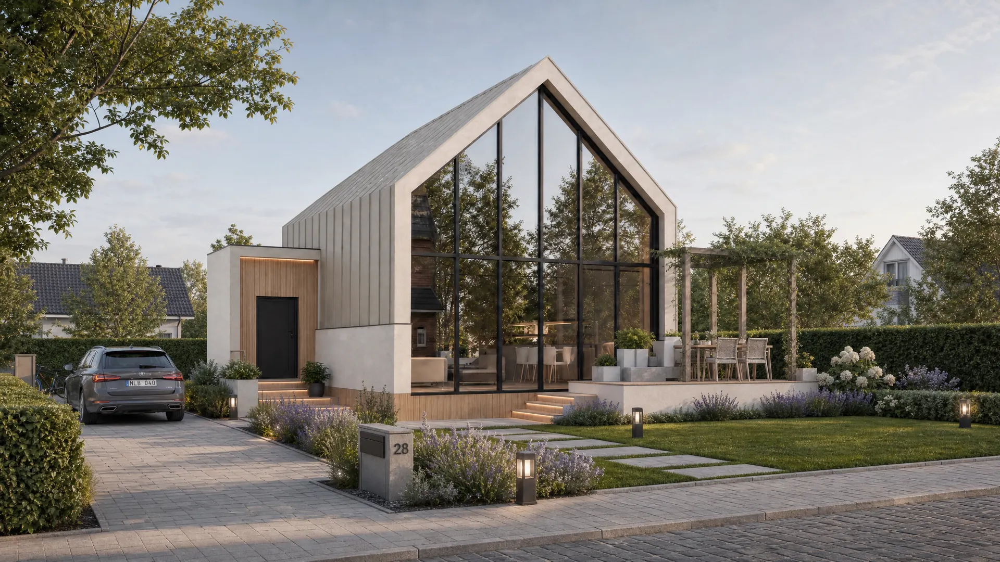
BarnHouse 85
Klasyczna forma współczesnej stodoły w technologii stalowej. 85 m² z antresolą, przeszklonym szczytem i dachem z blachy na rąbek.
Stodoła, którą znasz. Nowa technologia.
BarnHouse łączy technologię MoVilla z klasyczną formą inspirowaną współczesną stodołą. Dwuspadowy dach, przeszklona ściana szczytowa i prosta, elegancka bryła na rzucie prostokąta.
Parter mieści otwartą strefę dzienną z kuchnią, łazienkę oraz wiatrołap przylegający do ściany podłużnej. Antresola, na około 2/3 długości budynku, pełni rolę sypialni lub gabinetu. Schody na antresolę są w standardzie.
Budynek opracowano na sprawdzonych parametrach modelu MoVilla BarnHouse, z gwarancją solidności wszystkich zastosowanych elementów.
- Powierzchnia
- 85 m²
- Układ
- parter + antresola
- Wysokość w kalenicy
- ok. 7,9 m
- Poziom parteru
- +40 cm nad terenem
- Podpiwniczenie
- brak
- Posadowienie
- płyta fundamentowa
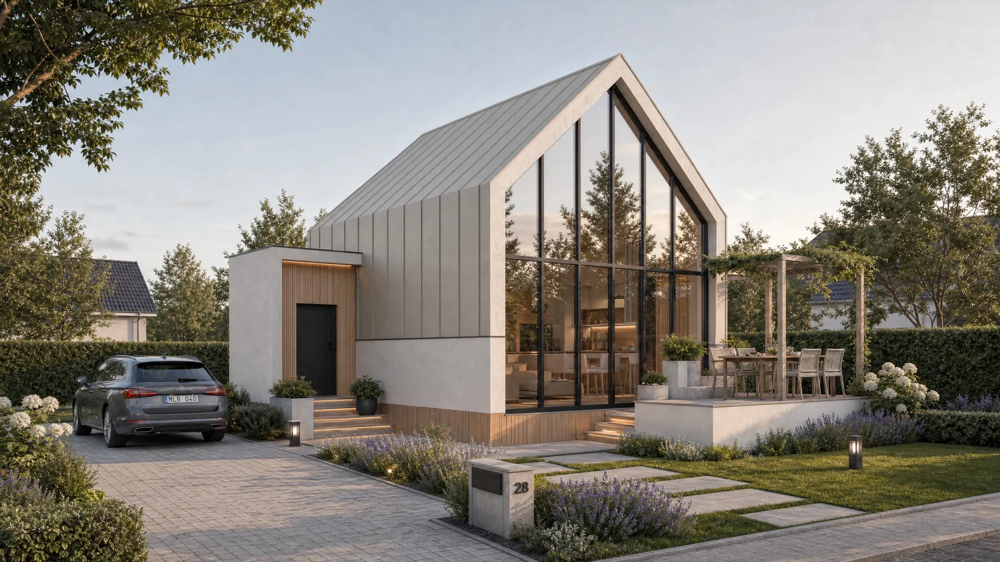
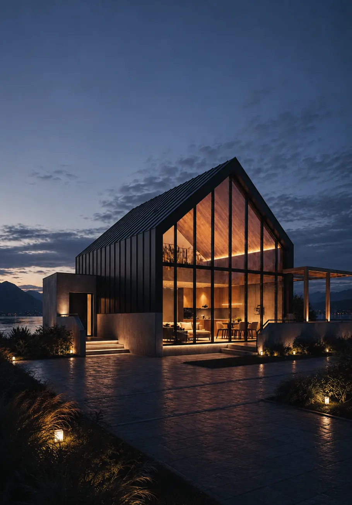
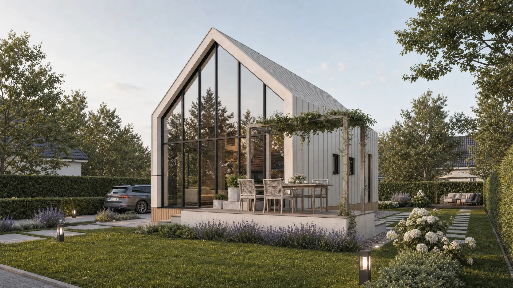
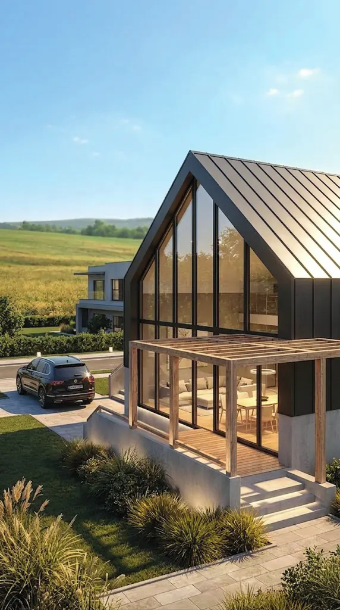
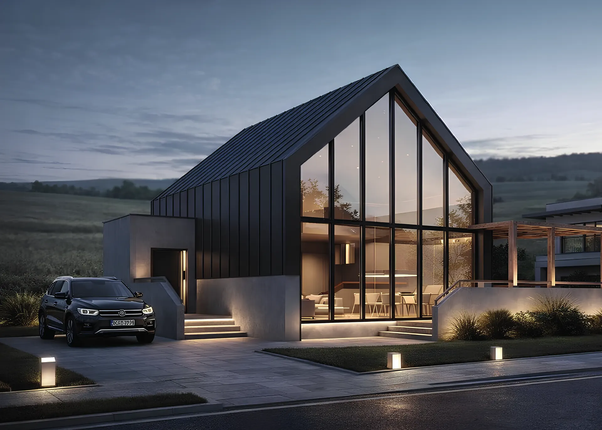
Przykładowa aranżacja wnętrz.
Przewiń w bok. Dotknij zdjęcia, aby je powiększyć.
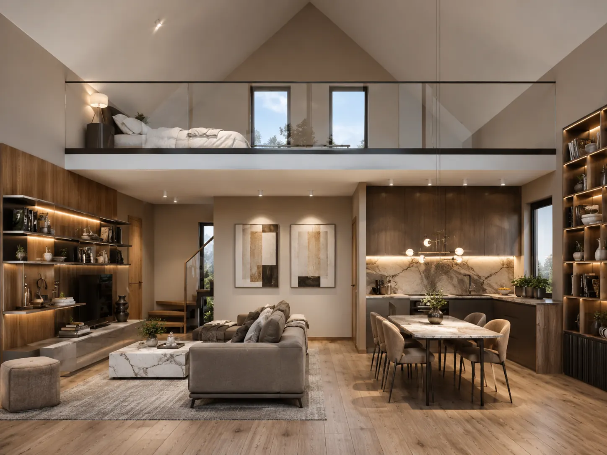
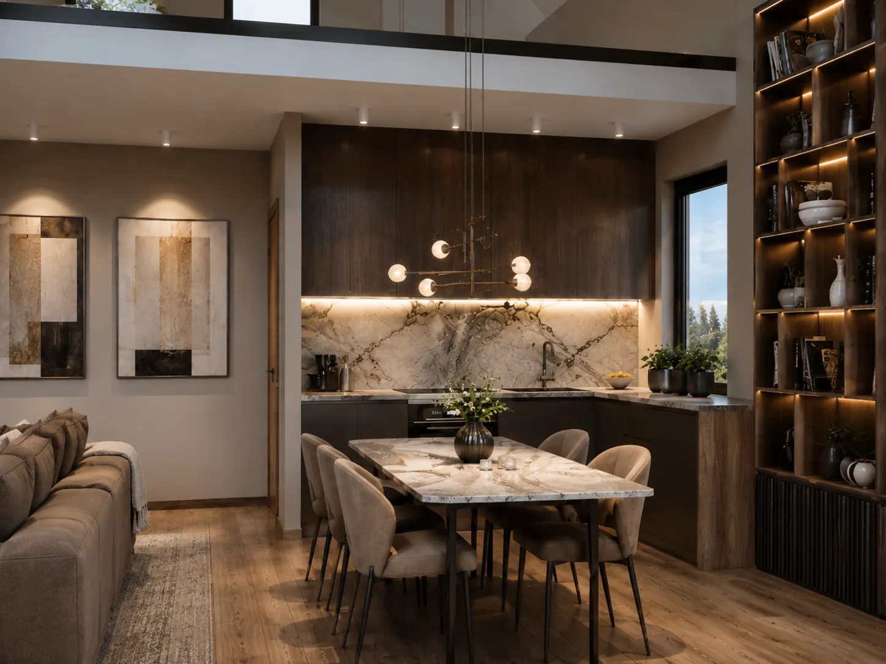
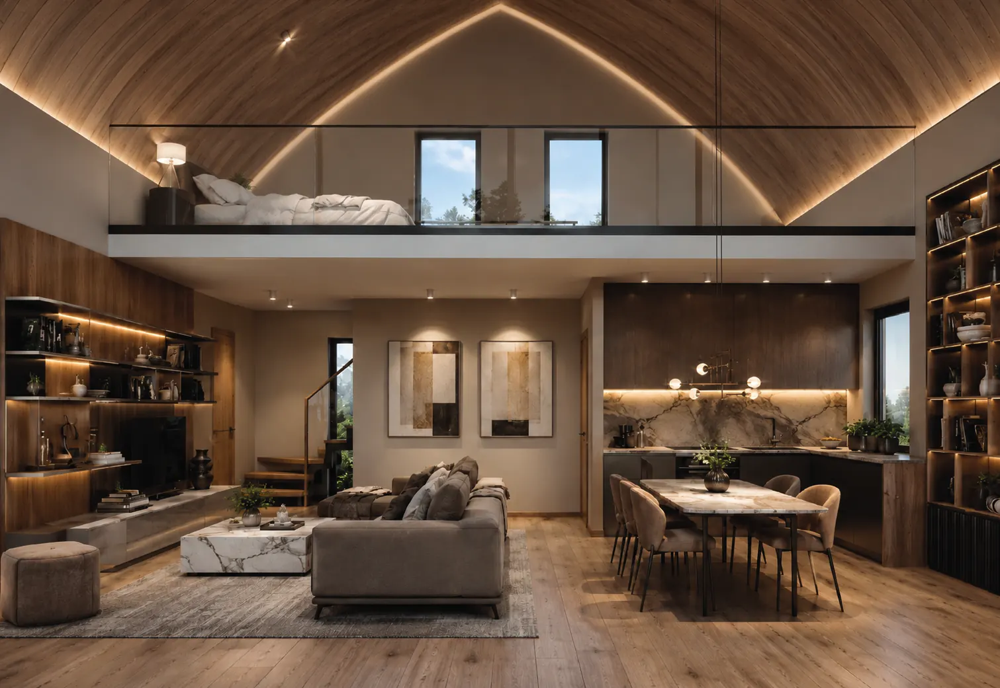
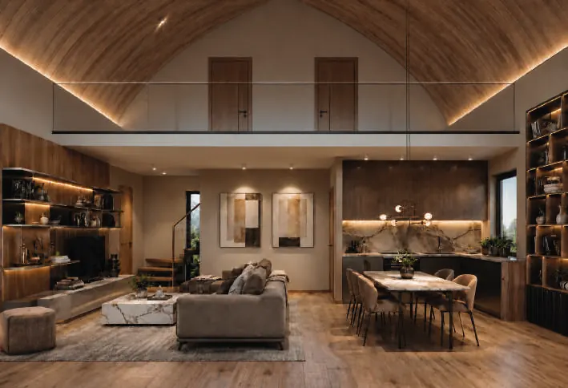
Wizualizacje wnętrz mają charakter poglądowy i przedstawiają przykładową aranżację.
Warianty i konfiguracje.
Dopasuj układ do siebie: wybierz wariant, aby zobaczyć rzut lub wizualizację.
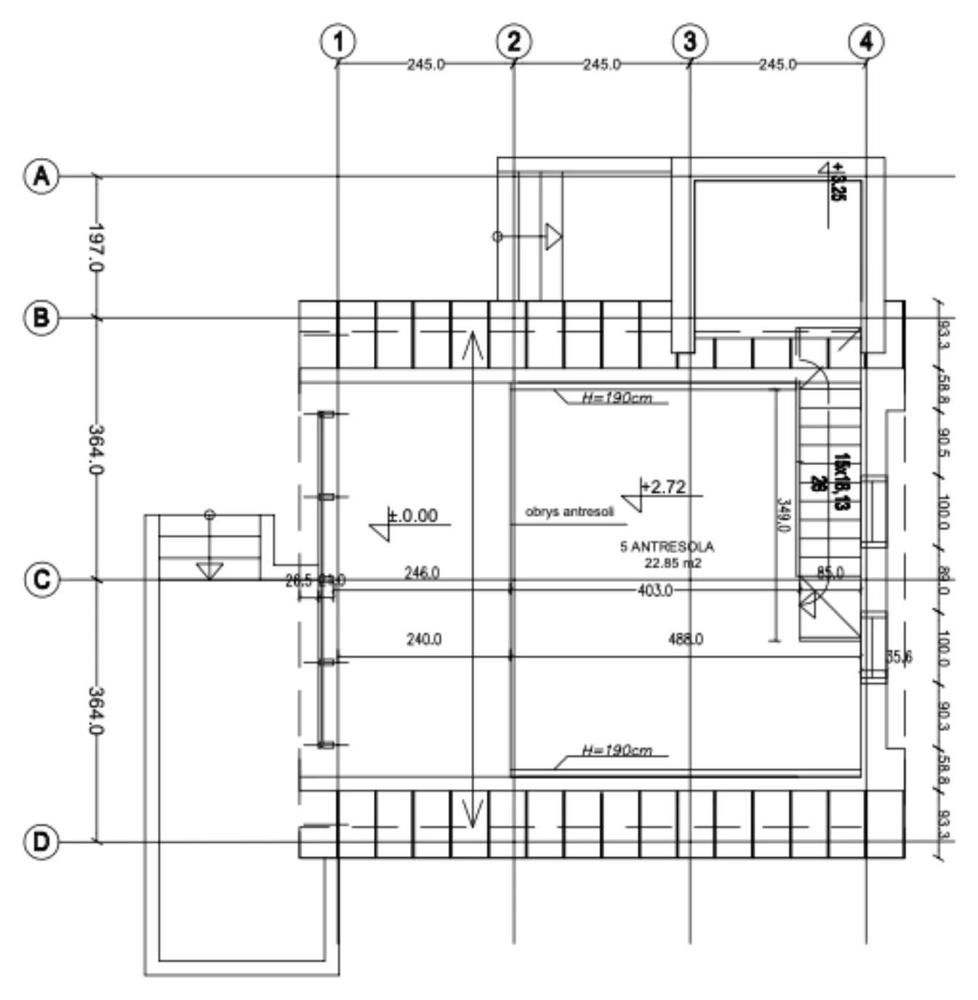
Sypialnia lub gabinet nad strefą dzienną, otwarta na salon lub wydzielona ścianką.
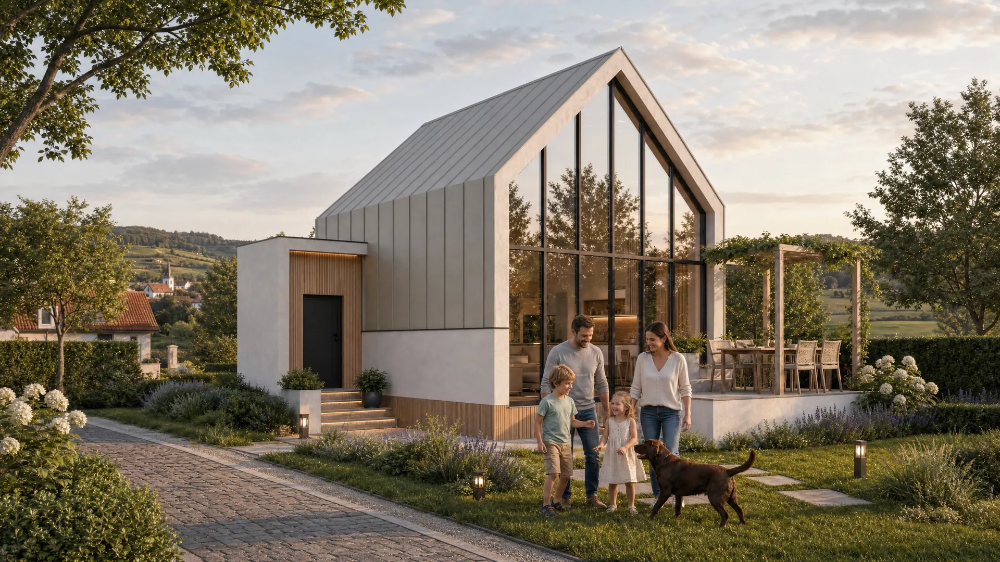
Ta sama forma w większym metrażu: 130 m² z pełnowymiarowym piętrem.
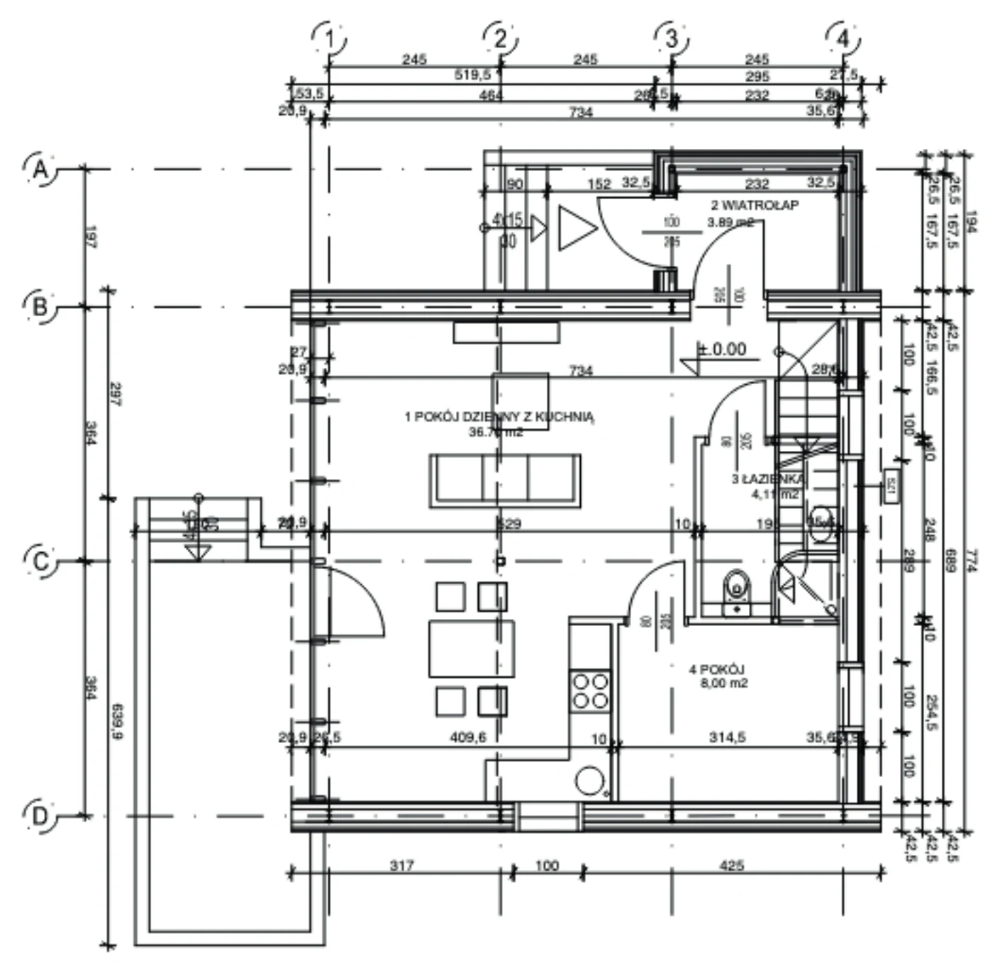
Do każdego modelu można dodać garaż albo garaż z tarasem na dachu.
Rzuty i przekroje.
Dotknij arkusz, aby zobaczyć go w powiększeniu.
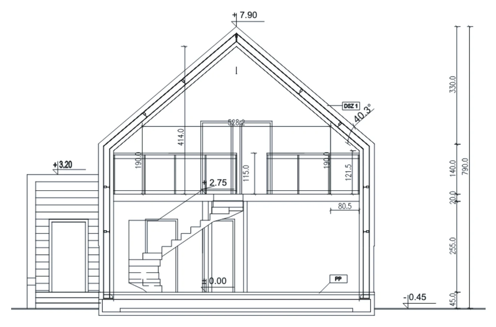
Parametry mogą zostać doprecyzowane na etapie adaptacji projektu do działki i warunków lokalnych. Rzuty poglądowe; układ pomieszczeń ustalamy indywidualnie.
Warstwa po warstwie.
Główne przegrody zewnętrzne osiągają U ≤ 0,15 W/m²K: wełna mineralna w trzech warstwach, paroizolacja aktywna, fasada aluminiowa z potrójnym szkleniem.
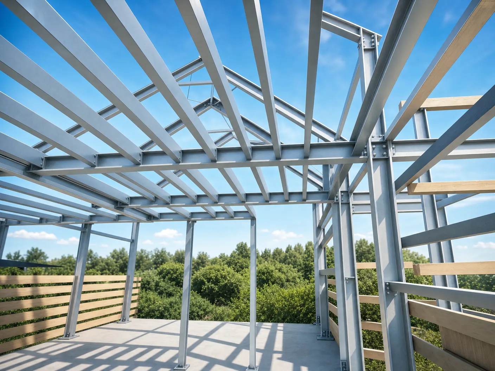
Główna przegroda domu: łukowa (ArcHouse, MYSA) lub dwuspadowa (BarnHouse). Warstwy od zewnątrz.
- Blacha na rąbek stojący
- Ekran włóknisty paroprzepuszczalny
- Pełne deskowanie z płyty OSB20 mm
- Szczelina wentylacyjna, listwy 40×4040 mm
- Membrana wstępnego krycia
- Wełna mineralna między łatami80 mm
- Wełna mineralna między krokwiami stalowymi IPE 180180 mm
- Ruszt stalowy wypełniony wełną80 mm
- Paroizolacja aktywna
- Płyta GK 2 × 12,525 mm
- Blacha na rąbek stojący
- Ekran włóknisty paroprzepuszczalny
- Pełne deskowanie z płyty OSB20 mm
- Szczelina wentylacyjna, listwy 40×4040 mm
- Membrana wstępnego krycia
- Wełna mineralna między łatami90–130 mm
- Wełna mineralna między krokwiami stalowymi160 mm
- Paroizolacja aktywna
- Płyta GK 2 × 12,525 mm
Przeszklona lub pełna ściana szczytowa z drewnianą elewacją.
- Deski elewacyjne20 mm
- Łaty, szczelina wentylacyjna 40×4040 mm
- Płyta drzewna otwarta dyfuzyjnie20 mm
- Konstrukcja stalowa 90 + kontrłaty 80, wełna mineralna170 mm
- Profile stalowe 90, wełna mineralna90 mm
- Paroizolacja aktywna
- Płyta GK 2 × 12,525 mm
- Panele lub deski elewacyjne20 mm
- Łaty, szczelina wentylacyjna 40×4040 mm
- Płyta drzewna otwarta dyfuzyjnie20 mm
- Kontrłaty drewniane 60, wełna mineralna60 mm
- Łaty drewniane 80, wełna mineralna80 mm
- Konstrukcja stalowa 80, wełna mineralna80 mm
- Paroizolacja aktywna
- Płyta GK 2 × 12,525 mm
Warstwa wykończeniowa (parkiet, terakota) po stronie inwestora, o ile oferta nie stanowi inaczej.
- Warstwa wykończeniowa inwestoraok. 20 mm
- Wylewka cementowa, jastrych60 mm
- Ogrzewanie podłogowe
- Folia izolacyjna
- Styropian podłogowy EPS120 mm
- Izolacja przeciwwilgociowa, folia budowlana
- Płyta fundamentowa wg projektu250 mm
- 2 × folia budowlana na zakład
- Styrodur 4000 CS200 mm
- Chudy beton B10100 mm
- Podbudowa: tłuczeń, pospółka300–400 mm
Fasada słupowo‑ryglowa RAL 7016 w systemie MC WALL ALIPLAST, okna GENESIS ALIPLAST. Szklenie potrójne; grubość i typ szkła dobierane do strefy wiatrowej (powłoki Antisol, Cool Light, Sun Guard). Statyka wg PN‑EN 1991‑1‑3 i 1991‑1‑4.
Standard deweloperski podwyższony.
Wizualizacje wnętrz mają charakter poglądowy. Wyposażenie ruchome, zabudowa meblowa i finalne wykończenie wnętrz nie są częścią standardu, o ile indywidualna oferta nie stanowi inaczej.
Poproś o wycenę- Fundamentpłyta fundamentowa
- Konstrukcjastalowa konstrukcja szkieletowa
- Dachkonstrukcja, izolacja, blacha na rąbek
- Ściany zewnętrznewarstwy zgodnie z przekrojem DSZ / SZ
- Fasada i ściany szczytoweelewacja, ocieplenie
- Schody na antresolęw zakresie
- Ścianki działowezgodnie z projektem
- Instalacja wod‑kanrozprowadzenie instalacji
- Instalacja elektrycznarozprowadzenie instalacji
- Ogrzewaniepodłogowe, maty grzewcze
- Stolarkaokna, drzwi zewnętrzne, drzwi tarasowe
- Wnętrzeprzygotowane do prac wykończeniowych